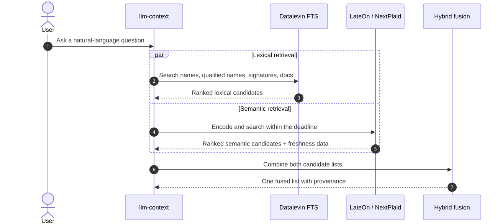

llm-context · visual guide
Page 3 of 7
Concept 03
Combining exact words with semantic meaning

Parallel candidate generation

Datalevin full-text search

LateOn semantic retrieval

Rejecting stale semantic matches

Fusing two rankings
← Planning
Next · Qualification →